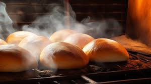
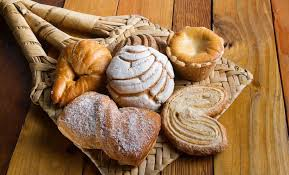
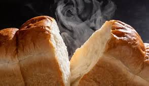

La panadería "La Desesperanza" fue fundada en 2024 por el Sr. Pescador, quien con su pasión por la panadería tradicional, creó una empresa que ha perdurado por generaciones. Desde sus humildes comienzos en un pequeño local en el centro de la ciudad, hasta convertirse en una de las panaderías más queridas por los habitantes locales, su misión siempre ha sido ofrecer productos frescos, de alta calidad y hechos con los mejores ingredientes.
Hoy en día, seguimos manteniendo ese espíritu artesanal, combinando las técnicas tradicionales con innovaciones que nos permiten ofrecer una variedad de panes y postres para todos los gustos.
| Imagen | Descripción |
|---|---|
|  | Uno de nuestros panes más populares, horneado al estilo tradicional. |
|  | Nuestro tradicional pan dulce hecho para todos los gustos |
|  | Los productos recién horneados listos para ser entregados a nuestros clientes. |